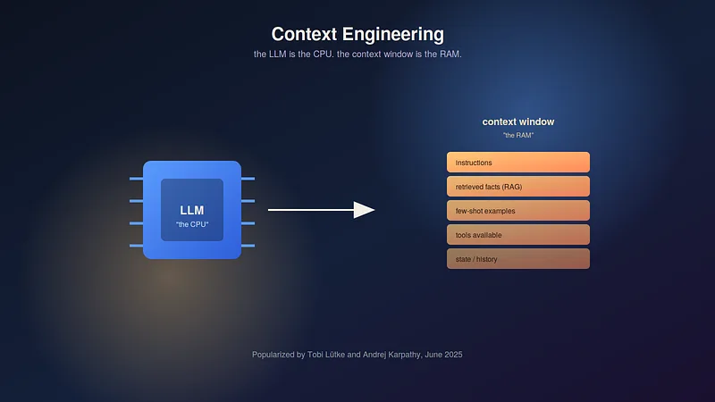

Context Engineering: The Skill That Quietly Replaced Prompt Engineering


In 2023, “prompt engineer” was being called one of the hottest new job titles of the decade. By mid-2025, the term was already starting to feel dated — not because prompting stopped mattering, but because the industry realized it had been naming the wrong skill all along.
The shift has a clear origin point. In June 2025, Shopify CEO Tobi Lütke posted that he preferred a different term entirely: context engineering, which he described as the art of providing all the context needed for a task to be solvable by an LLM. Days later, Andrej Karpathy — a founding member of OpenAI and former head of AI at Tesla — publicly agreed, and offered a sharper definition of his own: the delicate art and science of filling the context window with exactly the right information for each step.
Within months, the phrase had spread through the entire AI industry — from LangChain’s engineering blogs to Anthropic’s internal frameworks to Gartner’s analyst briefings, which by late 2025 were telling clients plainly that context engineering was in and prompt engineering was out.
Why the Old Term Stopped Fitting
“Prompt engineering” always implied something small: find the magic sentence, phrase the instruction cleverly, and the model does the rest. That framing made sense when people were mostly typing one-off questions into a chat window.
It stopped making sense once serious applications entered the picture — AI agents that plan multi-step tasks, coding assistants that work across an entire codebase, customer support systems that need a customer’s order history, account details, and company policy all loaded in at once. None of that gets solved by a clever sentence. It gets solved by carefully deciding, at every single step, exactly what the model needs to see — and just as importantly, what it shouldn’t.
Karpathy’s own mental model makes the shift concrete: think of the LLM as a CPU, and its context window as RAM. Prompting was about writing a good instruction. Context engineering is closer to operating-system work — deciding what gets loaded into working memory, in what order, and when it needs to be cleared out to make room for what matters next.
What Actually Goes Wrong Without It
Researchers studying agent failures have identified a recurring set of problems that all trace back to badly managed context, rather than a weak model:
Context poisoning — an early mistake or hallucination in the conversation gets treated as fact and compounds through every later step.
Context distraction — too much accumulated history buries the information that actually matters right now.
Context confusion — irrelevant details crowd the window and degrade the model’s ability to pick the right tool or answer.
Context clash — contradictory information from different points in a task confuses the model about which version is current.
These aren’t rare edge cases. Reported failure rates for multi-agent systems built without deliberate context management have ranged from roughly 41% to 87% across major frameworks — a strong signal that the constraint most teams are hitting isn’t model intelligence, it’s what the model is being shown.
The Four Moves Behind Good Context Engineering

A framework popularized by LangChain in 2025 breaks the discipline down into four core operations, and most production agent systems today are built around some version of this cycle:
Write — externalize information instead of hoping the model remembers it. Scratchpads, memory files, and structured notes let an agent record what it’s learned so it doesn’t have to re-derive it later.
Select — retrieve only what’s relevant to the current step. This is where naive RAG setups tend to fail: dumping every semi-related document into the prompt is not the same as choosing the right ones.
Compress — condense accumulated history as a task runs long, preserving meaning while shedding detail that’s no longer load-bearing. Without this, long-running agents slowly drown in their own transcripts.
Isolate — restrict what different sub-agents can see from each other, so one task’s context doesn’t leak into and confuse a separate one.
None of these are exotic ideas on their own. What’s new is treating them as an actual engineering discipline — something designed, tested, and iterated on — rather than an afterthought bolted onto a prompt.
This Is Bigger Than Chatbots
It’s tempting to file this under “prompt tips,” but the people driving this conversation are framing it as something closer to a new layer of software infrastructure. Karpathy has described three eras of programming: telling a computer exactly how to do something (traditional code), showing it what to do through examples (machine learning), and telling it what you want in plain language (the LLM era). Context engineering, in his view, sits at the center of that third era — the actual mechanics of making “just tell it what you want” work reliably at scale.
Anthropic has made a similar case internally, describing context engineering as the natural evolution of prompting: a finite, valuable resource that has to be managed with real engineering discipline rather than intuition. And the stakes attached to getting it right are no longer small. Analysts have pointed to hundreds of billions of dollars in AI investment converting into only a fraction of its intended business value — with poor context management, not model quality, cited as a central reason why.
Where to Actually Start

If you’re building anything beyond a single-turn chatbot, a practical path looks roughly like this:
Tier 1: Basic retrieval plus a scratchpad — give the model relevant documents and a place to jot down intermediate reasoning.
Tier 2: Add summarization and compression — actively manage the window instead of letting it fill up passively.
Tier 3: Move to multi-agent isolation only once you actually need it — splitting context between specialized sub-agents so their tasks don’t bleed into each other.
The uncomfortable truth for a lot of teams is that upgrading to a better model often isn’t the fix they need. The frontier models available right now are already capable enough for most tasks people are struggling with. What’s usually missing isn’t intelligence — it’s discipline about what that intelligence is allowed to see, and when.
Prompt engineering asks: what’s the right thing to say? Context engineering asks a harder, more useful question: what does the model actually need to know right now — and what should it not have to wade through to find it?
Sources: Tobi Lütke and Andrej Karpathy, public statements, June 2025; LangChain engineering blog, 2025; Anthropic, context engineering framework, 2025; Gartner analyst briefings, 2025. This article reflects publicly available information as of September 2026.
Context Engineering: The Skill That Quietly Replaced Prompt Engineering was originally published in Towards Data Engineering on Medium, where people are continuing the conversation by highlighting and responding to this story.
Explore my technical writing services and research samples or learn more about Soumi Ganguly.